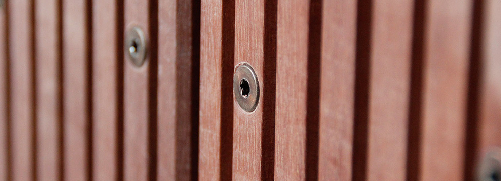

RVS A2
RVS A2Voor particulier & vakman
Een mooie vlonder.
Begint bij de
juiste schroef.
Van je eerste terras tot je volgende grote klus. Vind de schroeven en het gereedschap die bij jouw project passen.
Ontdek het assortiment ›
Kleine details. Een sterke verbinding.Voor particulier & professionalSpecialist in bevestigingPersoonlijk advies uit BeusichemOnderdeel van Santeq
Wat heb je nodig?
Alles bekijkenEen goede verbinding
Voor elke plank een passende schroef.


Een goed begin voor jouw vlonder.
Vertel ons over je project. Wij helpen je kiezen.